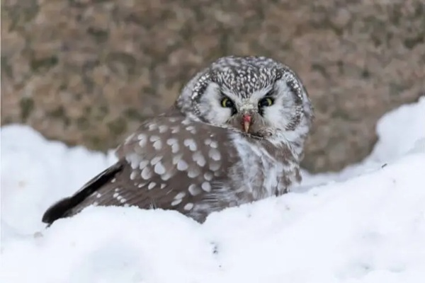

The Boreal Owl, also enchantingly called Tengmalm’s Owl, graces the hidden depths of the majestic boreal forests in North America and Eurasia. In the cloak of darkness, these diminutive wonders emerge, their captivating yellow eyes shining like beacons in the night. With a round head adorned by a distinct facial disk, they possess an air of mystique, as if veiled in secrets of the nocturnal realm.
The Boreal Owl, also known as Tengmalm’s Owl, is a fascinating and small owl species that can be found in the boreal forests of North America and Eurasia. In Minnesota, these owls have been observed nesting in abandoned woodpecker holes, which are commonly found in mature forests consisting of a mix of coniferous and deciduous trees. They typically lay a clutch of 4-6 eggs and diligently incubate them for about 28 days.
When it comes to their diet, the Boreal Owl primarily relies on small rodents like voles and mice. However, they have also been known to prey on shrews, birds, and insects. Using their exceptional sense of hearing, these owls fly low over the ground, carefully listening for sounds produced by their potential prey. Once they pinpoint their target, they swiftly dive and capture it with their sharp talons.
Unfortunately, Boreal Owls face conservation concerns in Minnesota and beyond. Habitat loss and fragmentation due to factors such as logging, wildfires, and climate change have adversely affected their preferred mature forest habitats. To safeguard these owls, protective measures have been implemented.
In Minnesota, they are safeguarded under the federal Migratory Bird Treaty Act, which prohibits harming or harassing them without proper permits. Additionally, efforts are underway to protect and restore their habitats, particularly by prioritizing the conservation of old-growth forests. Globally, the Boreal Owl is classified as “Least Concern” by the International Union for Conservation of Nature (IUCN).